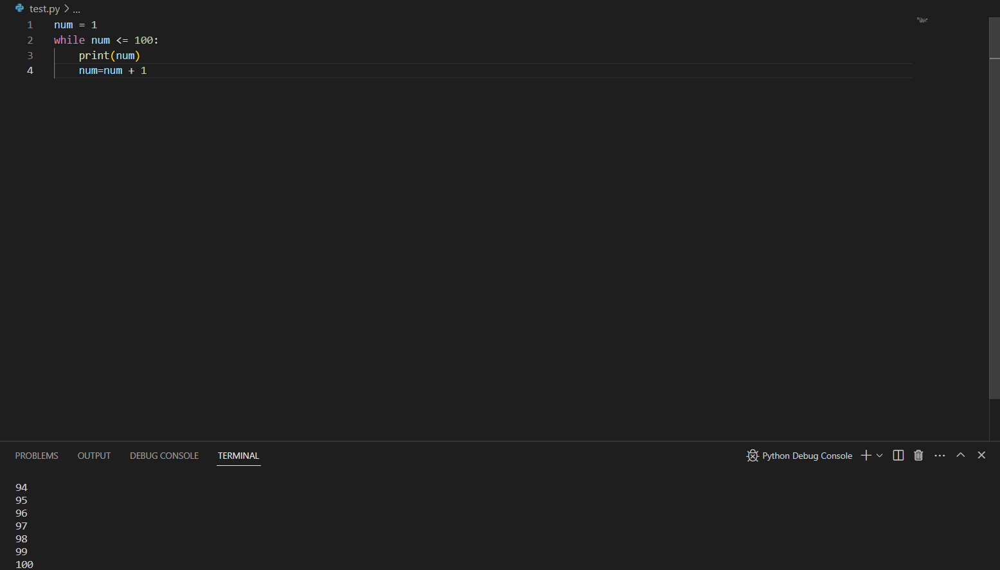
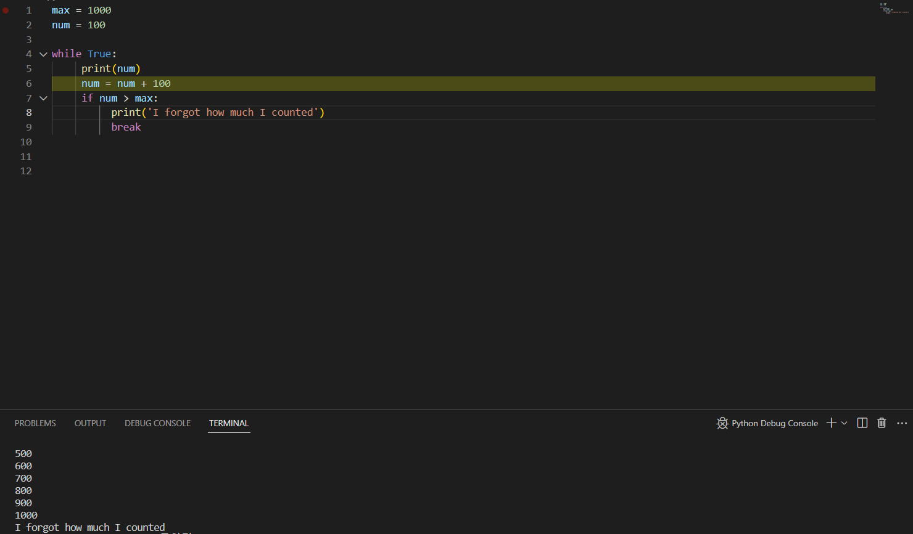
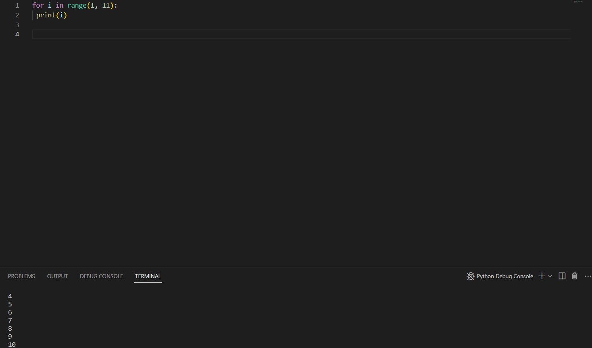

while을 사용하는 반복문
우리는 보통 어떤 값을 화면에 나타내고 싶을 때 print()를 사용합니다
>>> print(1)
1
그러나 만약 나타내야할 수가 100개, 1000개라면? 그것을 하나하나 다 직접 print 해야할까요?
이를 해결하기 위해 저희는 반복문을 사용합니다. 먼저 while문을 알아보겠습니다.
우리가 1부터 100까지의 숫자를 나타내고 싶다고 가정했을 때 이처럼 while을 사용할 수 있습니다
>>> num = 1
>>> while num <= 100:
... print(num)
...
num = num + 1
...
우리가 쓸 변수 num에 1이라는 정수를 넣고 num이 100이하가 될 때까지 num을 print 후 +1을 해주는 것이죠
이렇게 잘 작동되는 것을 볼 수 있습니다
1이었던 num이 1을 print 후 +1이 된 2가 다시 num이 됩니다. 그리고 이 과정을 반복하는 것이죠
조건문
여기 유명한 속담이 있습니다
달면 삼키고 쓰면 뱉는다
이것을 조금만 끊어서 써보면
만약 달다면 삼키고 그렇지 않다면 뱉는다
가 될 것입니다. 이제 이것을 영어를 섞어볼까요?
>>>if
달다면:
삼킨다
... else:
뱉는다
이제 저희는 if 조건문을 다 배웠습니다. 정말로요.
바로 실전으로 넘어가보죠
이번에는 a와 b중 어느 것이 더 큰지 판별하는 프로그램을 if문을 통해 만들어볼 것입니다. 바로 보시죠
>>> if a > b: # 만약 a가 b보다 크면
...
print('a') # 'a'를
출력한다.
...
else: # 그렇지 않으면
...
print('b') # 'b'를
출력한다.
...
이제 a와 b에 어떤 값이 들어가있냐에 따라 답이 달라질 것입니다.
이것은 '변수' 파트에서 우리 모두 배웠으니 각자 만들고 변수의 값을 바꿔보며 실습해봅시다.
반복문과 조건문
그럼 이번에 배운 while 반복문과 if 조건문을 조합하여 볼까요
모두 가끔 돈을 세다가 도중에 얼마까지 세었는지 잊어먹은 기억 한번쯤 있죠?
특히 양이 많은 동전을 셀 떄는 특히 빈번합니다. 따라서 이번에는 그것처럼 값을 세다가 1000원에서 멈추는 반복문을 작성해봅시다.
max = 1000
num = 100
while True:
print(num)
num = num + 100
if num > max:
print('I forgot how much I counted')
break
위처럼 작성을 하면
이처럼 잘 작동함을 알 수 있습니다.
게다가 위 예시문에서 break를 사용하면 작동이 중단되고 반복문에서 벗어날 수 있음을 알 수 있습니다.
for 반복문
이 for 반복문은 리스트와 같은 시퀀스를 이용할떄 사용하지만 둘 다 아직 배우기엔 이르니 가장 기초부터 배우겠습니다.
바로 range()를 이용하는 것이죠.
range()는 어떤 정수를 인자로 주면 그 정수 범위 내의 정수들을 만들어줍니다
range(1,5)는 1 이상 5 미만의 정수들을 가진다는 소리죠.
그럼 이를 이용해서 1부터 10까지 출력하는 프로그램을 짜보도록 하겠습니다
>>> for i in range(1, 11):
print(i)
이렇게 한번 써보세요
위 사진처럼 잘 진행됨을 알 수 있습니다.
이처럼 반복문은 while 뿐만이 아니라 for 문을 이용해서도 사용이 가능합니다
이번 시간에는 이렇게 반복문과 조건문에 대해서 알아보았습니다.
다음 장에서는 함수에 대해서 알아보도록 하겠습니다.
다음 장에서 봅시다.